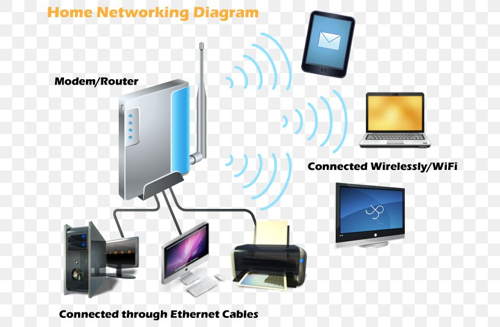

yerel sunucu kurma (programsız)
yerel sunucu kurmak için aynı modeme bağlanan birden fazla cihazınız olması gerekiyor örneğin bilgisayar cep telefonu tablet vs. benim durumumda bilgisayarı bir yerel sunucu yaptım nasıl mı !?

yerel sunucu kurmak için aynı modeme bağlanan birden fazla cihazınız olması gerekiyor örneğin bilgisayar cep telefonu tablet vs. benim durumumda bilgisayarı bir yerel sunucu yaptım nasıl mı !?
( IPv4 adresi) / odev1 /
gireceğeim.